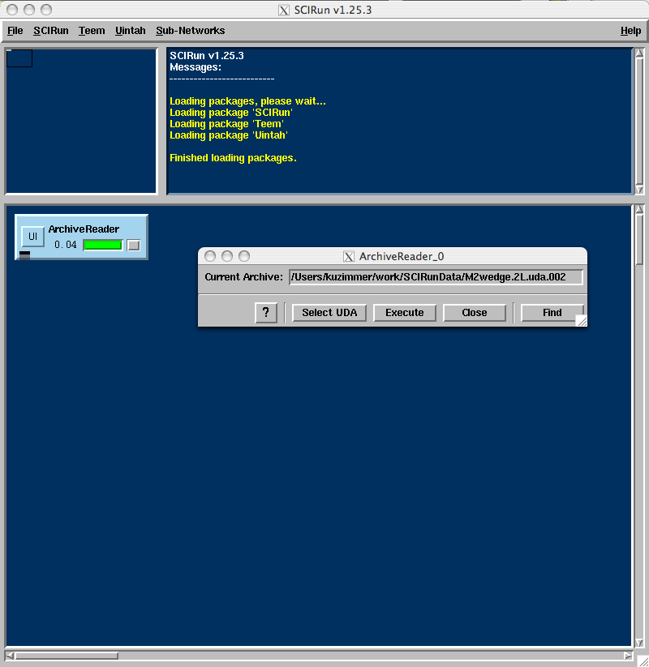
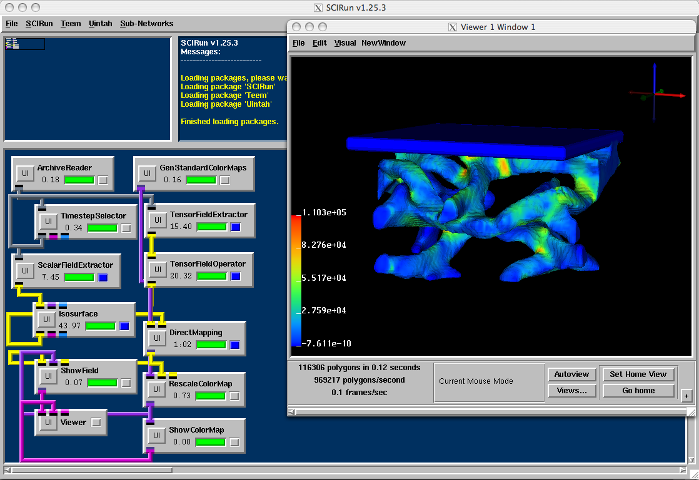

Uintah Visualization Tutorial
This tutorial assumes a basic working knowledge of SCIRun. As such,
the process of creating modules and connecting them together will not
be covered. (Go here
for more information on SCIRun.)
Find a working copy of SCIRun
If you do not already have access to the SCIRun problem solving
environment, you can go here
for instructions on how to down load the software. Then refer to the
above link for information on how to build and run SCIRun.
Specifically, you will need a build of SCIRun that was configured with
the ''--enable-package='Uintah''' option. You can see if the Uintah
module package was loaded by SCIRun by looking at the text in the
upper right window. If you see the line '' Loading package 'Uintah'
'' then you should be good to go.
It is also helpful, though not necessary, to have the Teem package as
well. Again look to the upper right window. If Teem is installed,
you will see the message '' Loading package 'Teem' ''.
If all is well it should look like this:

The First Module: ArchiveReader
Any SCIRun network used to visualize an UDA will start with a single
ArchiveReader module. Create one using the menu under Uintah ->
DataIO -> ArchiveReader. Click on the new ArchiveReader's UI button.
From the ArchiveReader GUI, click Select UDA. Now you can browse to
the UDA file you are trying to visualize. Remember, an UDA file is a
folder, so you want to hit the "Select UDA" button when you have the
folder you want selected, do not browse into your UDA folder and
choose the index.xml or such. You should see something like the image
below. Once you have found your UDA, click "Close" to close the
ArchiveReader panel, and move on to the TimestepSelector module.
The ArchiveReader must be connected to a TimestepSelector. Although
there are other modules that will connect directly to the
ArchiveReader, all of them need the timestep information provided by
the TimestepSelector, and therefore will not work properly if
connected directly to an ArchiveReader.

The Next Module: TimestepSelector
Create a new TimestepSelector from the menu Uintah -> Selectors ->
TimestepSelector, and connect the output from ArchiveReader into the
input of your TimestepSelector. Open up the TimestepSelector UI
panel. This module has two basic functions. The first is to choose a
time step from your UDA file, since you can only look at one at a
time. The timestep you want is found by using the slider in the top
left of the panel. The second function is to display the wall clock
time information of the currently selected timestep. The display
properties are modified with controls on the bottom half of the
TimestepSelector UI. If you want to display the clock information,
connect the magenta geometry port from the bottom of TimestepSelector
into your Viewer module. You can use the slider in the
TimestepSelector UI to dynamically move between frames in SCIRun;
however, depending on the size of your dataset and complexity of your
rendering, this could run slowly since moving the timestep will force
the entire network to run over again.
A third function of the Timestep Selector is animation control. This
is useful for making movies. By selecting the
"Animate" check box and then selecting "Execute", the TimestepSelector
module will read the timesteps in order starting with the currently
selected timestep. The rate at which the module selects the timesteps
is controlled by the downstream modules. Once all of the downstream
modules have finished processing, the next timestep will be sent down
the stream. See the image below.

Choosing a Variable
Now that you have a single timestep of data out of an UDA, you can
pick out individual variables to visualize. Under the Uintah ->
Selectors menu, there are 4 members of the *FieldExtractor family:
Particle, Scalar, Vector, and Tensor. You will hook up one of these
selectors to the same output port of the TimestepSelector for each
different variable you want to visualize. For most cases, each
variable will at this point have it's own independent pipeline until
they all come back together at the Viewer module.
The Scalar, Vector, and Tensor *FieldExtractors, extract Uintah grid
variables from the UDA and turns them into SCIRun fields. This allows
you to use the SCIRun visualization tools for fields, which we will
see examples of later. The Particles are extracted into separate types
and are currently only visualized with Uintah tools.

Scalar Visualization
There are three basic ways to visualize scalar data:
* Isosurface
* Particle Visualization
* Volume Visualization
You will often have to mix all three methods to get your desired results. For example, imagine a simulation of an explosive within a container. You want to visualize the container as it is breaking apart, you want to see the remaining explosive as it burns away, and you want to see the fire as well. One way of doing this is to isosurface the container's mass data, perform a particle visualization on the mass data from the explosive material, and perform a volume visualization on the temperature field.
Isosurface
Here we will provide two examples of Isosurfacing. In the first we
simply extract a scalar field from the UDA and create a surface of
some isovalue. First we create our net, grabbing the Isosurface
module from the SCIRun-->Visualization-->Isosurface and connecting it
to the Viewer from SCIRun-->Render-->Viewer. After selecting an UDA
and a scalar variable, we then open the isosurface interface, select a
isovalue to create our isosurface, deselect "Build Output Field" and
select "execute". Here is what we might get for the mass data in a
compressed foam simulation.

While this image is informative, it might be more interesting to map
stress values to the isosurface rather than just viewing the
isosurface with one color. This requires some help from a variety of
SCIRun tools as well as some other Uintah tools. Below is a picture of
the net that performs this mapping.

Let's take a quick look at the interfaces for some of the new modules
pictured below. The GenStandarColorMaps modules give you a selection
of standard colormaps for mapping scalar data to color. It is
connected to the RescaleColorMap module which gathers the data value
range from the field output from DirectMapping, then passes on a new
ColorMap to ShowField whose colors cover the entire data range. The
ShowColorMap module passes some geometry to the Viewer to display the
color key seen in the above image. The TensorOperator module takes a
TensorField and performs the equivalent stress calculation. The output
scalar field is then intersected with the geometry field output by the
Isosurface in DirectMapping. The resulting field is then sent to
ShowField, which in this case only creates the geometry of the faces
with color mapped appropriately, then sends the geometry to the
viewer.

Particle Visualization
Particle data in an UDA can be viewed by extracting particles with the
Uintah-->Selectors-->ParticleFieldExtractor module and connecting it
to Uintah-->Visualization-->ParticleVis module. Note the ParticleVis
needs to have input to its first port, the Scalar Particles port, the
remaining input ports are optional. Typically you can connect the
three outputs of the ParticleFieldExtractor to the 1st, 3rd, and 4th
input of the ParticleVis. However in this example, the only scalar
particle variable is p.mass, so again we will create a scalar particle
set of equivalent stress derived from p.stress variable via the
Uintah-->Operators-->TensorParticlesOperator, then pass that into the
first port of ParticleVis. In the second ParticleVis port we will pass
p.mass as a scaling variable, so that particles with small mass are
shown smaller and particles with zero mass disappear. Just like with
tensor fields in the example, we again need
to scale the colormap to fit the data before passing it to the
ParticleVis module.

A nice thing about viewing particles is that you can actually view tensor data. If we zoom in on the red square in the above particle visualization you can see that the particles are represented by spheres that are sized and oriented according to the eigenvectors of the tensor. Pictured below with the ParticleVis interface.

Volume Visualization and Slice Visualization Via Textures
Volume Visualization allows you to see inside a volume of data. You
can highlight certain data values and see how they relate to the
entire dataset. SCIRun and Uintah allow you to use volume rendering
based on hardware textures if it is available. Here is a simple volume
rendering net of the same foam dataset we have seen previously. In
this case we have increased the opacity of some of the stress values
so that they stand out.

Note that the scalar field that is output from the TensorFieldOperator
is linked to the TextureBuilder, which is then linked to the
VolumeVisualizer. There are few controls for opacity in the volume,
the most important being the GenStandardColorMaps module. Let's
revisit the user interface for GenStandardColormaps:

The line with black circles that runs across the color window is the
opacity control. Circles can be added by right clicking on the
line. Moving the circle upward increases the opacity for data that
maps to area, moving it downward decrease opacity or increases
transparency. Right clicking on a circle removes it. In this example
we have set the opacity to zero for minimum values and increased it
for values between 63,000 and 93,000.
Below we show the VolumeVisualizer interface basic and sampling tabs:

In the basic tab you can edit the overall opacity for the entire
dataset with the "Global Opacity" slider. There are also two modes
for blending and interpolating the data. The sampling tab controls
the number of slices used to render the data. The shading tab (not
shown) allows control for some advanced shading techniques. -
Creating Movies
Once you have an UDA with several timesteps of simulation data, you
might want to make a movie to see how the data changes over time.
First you will need to set up a visualization net. Once the net is
built, select "File-->Record Movie" from the menu at the top of the
Viewer window. You should see the following interface:

The "Record Movie" interface allows you to specify whether you want to
save frames to make a high quality visualization by checking the "PPM
Frames" or "PNG Frames" or directly make a lower quality "Mpeg" video.
In the "Name" field, the default text is a pattern for dumping ppm
frames or png frames. If you just want to make and mpeg movie you can
just specify the name without the ".%04d" pattern and the out put will
be placed in the file movie.mpg. If you are dumping frames, you can
specify the frame number at which to start numbering frames in the
"Next Frame No:" The "Resize" check button allows you to specify an
exact frame size.
An important thing to remember is that once you click on PPM, PNG, or
Mpeg, every redraw of the Viewer window will get recorded. So if the
viewer window is partially obscured by another window, and you remove
the obscuring window, a redraw will occur and a frame will be saved.
The "Sync with Execute" button is designed to prevent this occurrence
by attempting to insure that frames are only saved after all of the
modules in a visualization net have completed execution.
Once you have prepared everything, clicking the "Animate" button in
the The Next Module: TimestepSelector
will automate the process of saving a frame per timestep, by executing
the net for each timestep of data.
Return to Index.
|